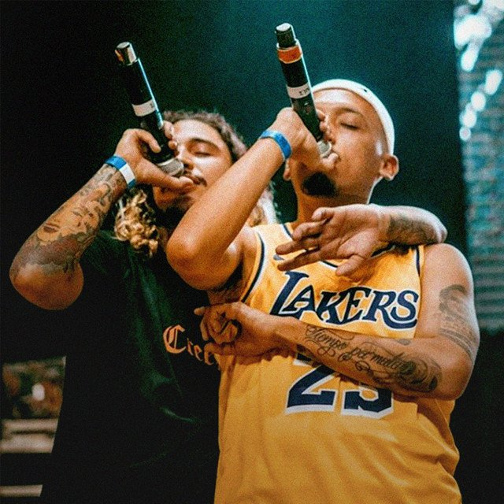

Doble Porción es un duo de raperos de Medellín, Colombia nacido en 2011 y conformado por Métricas Frías y Mañas Ru-fino. En sus comienzos grabaron en Moebiuz Studio, casa de grabación montada por Sebastián Álvarez (Zof Ziro) en 2009, donde realizaron tanto sus primeros trabajos en grupo, como sus proyectos de solista y colaboraciones con otros de la casa, como en el proyecto La Gra$a y en colaboraciones constantes con Zof-Ziro, Granuja y Crudo Means Raw.
Entre el 2017 y 2018, comenzaron nuevas exploraciones que detuvieron su producción de rap más ligado a lo clásico, para aventurarse en otros sonidos y estilos como el trap y el reguetón, lanzando múltiples sencillos donde su temática, antes más ligada al barrio y sus vidas joviales, cambió para reflejar sus estados actuales, su forma de ser y los ideales de vida de “La pantera y el matador”, como también suelen ser conocidos.
Puedes seguir su pagina de instagram